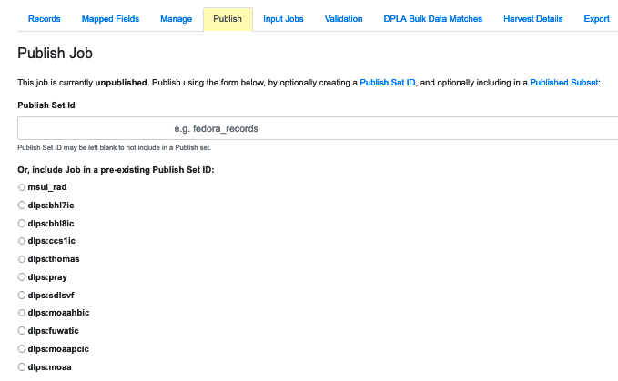
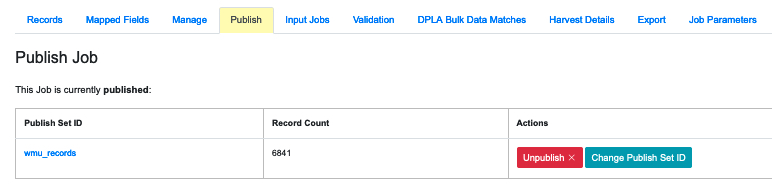
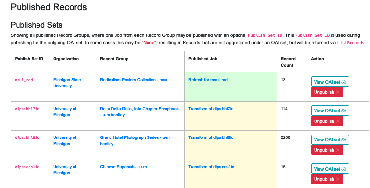

Jobs must be Published in order for metadata to appear in Combine’s OAI feed and be available for harvest by the DPLA or any other institution. Jobs can be Published by adding them to Combine’s own OAI-PMH server, or by an export of flat XML files. This section explains how to Publish a Record Group, or to be more accurate, how to Publish a Job that can represent a Record Group.
When a Job is published, a user may a Publish Set Identifier (publish_set_id) that is used to aggregate and group published Records.
The same Publish Set Identifier can be applied to multiple Jobs so they can be grouped together when Published. Q user can also choose to Publish a Job without a Publish Set Identifier. The Job’s Records will still be Published, but they won’t be aggregated under a particular set.
When a user decides to Unpublish a Job, that will remove its “Published Job” flag, but the Job and its Records remain in Combine otherwise unchanged.
Additionally, Combine allows the user to create “Published Subsets,” which give the user more control over how Published Records are grouped together (see below).
To Publish a Job, you will need to go to its Job Details page and select the tab called “Publish.” That tab can also be reached by going to the Job’s Records Group page and finding its row on the Jobs table. In the column marked “Publishing” you will find a “Publish” button, and clicking it will take you to the “Publish” tab on its Job Details page:
|
| Publish/Unpublish Buttons |
Regardless of how you get there, if the Job is unpublished, the “Publish” tab will show the following:
|  |
| The Publish tab on a Jobs Detail page for an unpublished Job |
At the top will be a field for the user to add a Publish Set Identifier. If the desired identifier has already been created, then you can select it from the list below the field. Pressing the green button at the bottom of the list will Publish that Job, grouping it under the selected Publish Set Identifier.
If a Job is already published, the tab will have a different display:
|  |
| The Publish tab on a Jobs Detail page for a published Job |
Here the user can confirm that the Job is Published, and also find buttons for Unpublishing the Job or moving the Job to a different Publish Set Identifier. When an Unpublish button is clicked, Combine will ask for a confirmation and then Unpublish the Job.
Note: Combine’s OAI-PMH feed is like any other OAI aggregator. When it creates an OAI Identifier for a Record, it will use any Publish Set Identifer as an OAI Set Identifier and add it as a prefix to the Record Identifier. This is normal behavior, but it might be something the user will want to consider before Records are harvested from Combine–what OAI sets a Record might have been published under in the past (thereby effecting its identifier). It’s also a good reason to avoid using any special characters when creating a Publish Set Identifier.
All Published Records can be seen on the “Published Records” page. Combine’s main menu, appearing at the top of the screen, includes a link named “Published” that will take you to it:
|  |
| The Published Records page |
Note that the table is organized into sets with Publish Set Identifiers in the far left column.
The the right of the table is a green button that will run an Analysis Job on all Published Records. This is provided as a convenience so a user won’t have to build such a Job by manually selecting all Published Jobs one-by-one, but most users will probably not need to use it. (See Part 11: Analysis for more on Analysis Jobs.)
The Published Records Section
Below the table of Published Sets is a section called “Published Records” that’s similar to a Job Details page (see Part 12) but includes all Published Records. The tabs in this section include:
The Published Subsets Section
The last section on the Published Records page displays any user-defined Published Subsets in Combine:
 |
| The Published Subsets section |
Each row on the Published Subsets table includes a “View” button that will take the user to the “Published Records” page but with that subset highlighted.
When viewing a paricular Subset, the tabs “Records” and “Mapped Fields” show only Records that belong to that particular subset. Clicking the “Outgoing OAI-PMH Server” tab will show the familiar OAI-PMH links, but the displayed OAI endpoint contains only Records that are in that Subset.
The next section describes Subsets in detail and explains how to create one.
Published Subsets are user defined subsets that make it possible to reorganize Published Records and Jobs into customized groups that cut across the normal divisions of Organization and Record Group. A user creates one by selecting a combination of:
Published Subsets allow the user to create specific combinations of Published Records for particular needs.
By default, exports from Combine’s OAI-PMH server, or from flat file exports, will include all published Records in Combine. For most users, this will be perfectly acceptable. It’s also possible that organizing exports at the level of Publish Set Identifiers – which translate directly to OAI sets – may be all that a Combine user needs to provide the right metadata to the right places. But if the user needs more granular control of metadata, Published Subsets allow the user to give customized groups of Records their own OAI-PMH endpoint, or their own flat file exports.
For example, imagine an instance of Combine that supports a state’s DPLA service hub and also provides metadata for a online portal giving access to digital collections from institutions around that state. There would certainly be overlap in the Records shared with the DPLA and the state portal, but there may also be subsets of Records that are shared with one but not the other. In this scenario, the records bound for DPLA might be available through the subset “dpla” and the OAI endpoint /oai/subset/dpla, while the records bound for the state portal could be available in the subset “state_portal” and available for OAI harvest from /oai/subset/state_portal.
Some final points:
To create a Published Subset, scroll to the bottom of the “Published Records” page and click on the green “Create Published Subset” button. That will take you to the “Create Published Subset” page, which maybe remind you of the “Publish Job” page:
 |
| Creating a Published Subset |
Then fill out the following:
Next: Exporting Records